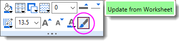
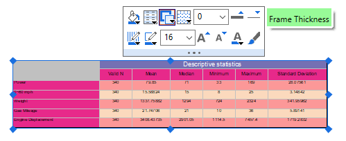
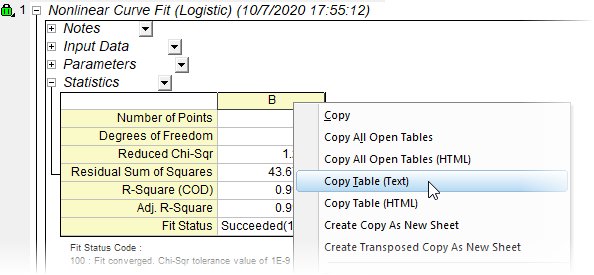
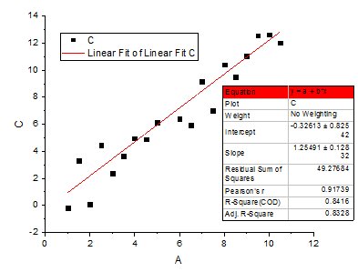
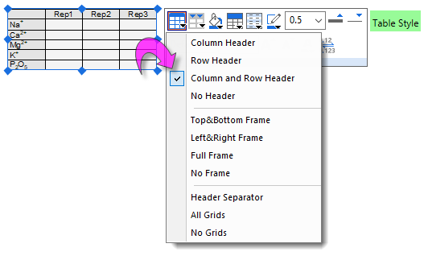

FAQ-136 Wie kann ich Tabellen zu einem Diagramm hinzufügen und anpassen?
Add-Table-to-Graph
Letztes Update: 09.12.2022
Der Anwender kann mehrere Methoden verwenden:
Arbeitsblatt einfügen
Diese Option funktioniert am besten in den Versionen 2023 und höher. (Sie kann auch in bis zu einem gewissen Grad in älteren Versionen verwendet werden, ihre Verwendung ist dort jedoch etwas umständlich -- siehe eine Übersicht in diesem OriginLab-Blogeintrag).
-
- Fangen Sie mit einem Arbeitsblatt an, dass Sie in ein Diagramm oder ein Layout einfügen möchten. Fügen Sie die Daten von Interesse -- aber nicht mehr -- zum Arbeitsblatt hinzu, da alle Zeilen, die Daten enthalten, eingefügt werden.
- Sie können den Stil des Blatt vor oder nach dem Einfügen des Arbeitsblatts in Diagramm oder Layout bearbeiten. Da das eingefügte Arbeitsblatt mit dem Original verknüpft ist, können jegliche Änderungen des Originals an das eingefügte Blatt weitergegeben werden, indem Sie es (a) auswählen und dann (b) auf die Schaltfläche Über Arbeitsblatt aktualisieren auf der Minischaltfläche klicken.
- 
- Eine Stiloption, die am besten auf das ursprüngliche Arbeitsblatt angewendet wird, ist das Färben von vereinten Zeilen. Die Schaltfläche Vereinte Zeilen befindet sich auf der Minisymbolleiste der Arbeitsmappe auf Seitenebene. (Hinweis: Bewegen Sie die Maus über die Zelle links oben oder nahe des Fenstertitels im grauen Bereich rechts von der letzten Spalte.)

- Um das Arbeitsblatt in ein Diagramm oder Layout einzufügen, klicken Sie auf die Schaltfläche Arbeitsblatt einfügen (Symbolleiste Hilfsmittel). Wählen Sie im Hauptmenü Arbeitsblatt einfügen. Diese Aktionen öffnen einen Blattbrowser. Das zuletzt aktive Blatt wird in Fettdruck im Bedienfeld auf der rechten Seite hervorgehoben. Wählen Sie in diesem Bedienfeld ein Blatt aus und klicken Sie auf OK.
- Ziehen Sie an den Auswahlelementen auf dem eingefügten Blatt, um es neu zu skalieren.
- Wählen Sie das eingefügte Blatt und verwenden Sie die verfügbaren Schaltflächen der Minisymbolleiste, um Gitternetzlinien hinzuzufügen oder zu ändern, einen Rahmen hinzuzufügen, die Schriftgröße zu ändern etc.
- 
Arbeitsblattdaten einfügen:
-
- Markieren Sie Ihre Arbeitsblattzellen, klicken Sie mit der rechten Maustaste und wählen Sie Kopieren.
- Gehen Sie zum Diagramm, klicken Sie mit der rechten Maustaste und wählen Sie Einfügen, Link einfügen (verknüpft die Tabelle dynamisch mit den Ergebnissen) oder Link einfügen und transponieren (verknüpft die Tabelle dynamisch und transponiert die Daten).
- Das Kopieren und Einfügen eines Datenbereichs lässt nicht das gleichzeitige Kopieren von Informationen der Spaltenbeschriftungszeilen zu. Wenn Sie diese kopieren möchten, klicken Sie zuerst doppelt auf die Tabelle, um die Zwischentabelle zu öffnen. Aktivieren Sie die Spaltenbeschriftungszeilen in der Tabelle und fügen Sie die Metadaten entweder durch Kopieren-Einfügen oder durch Link einfügen aus dem Arbeitsblatt in die Tabelle ein. Klicken Sie auf die Schaltfläche Tabelle aktualisieren.

Fügen Sie eine leere Tabelle ein und manuell Daten hinzu oder fügen Sie die Arbeitsblattdaten über die Funktionen Kopieren-Einfügen oder Link einfügen hinzu:
-
- Wählen Sie im Menü Einfügen: Tabelle. Alternativ können Sie auch auf die Schaltfläche Neue verknüpfte Tabelle in der Symbolleiste Diagramm klicken.
- Bestimmen Sie die Anzahl der Spalten und Zeilen im folgenden Dialog. Klicken Sie auf OK.
- Um Daten hinzuzufügen, klicken Sie doppelt auf das Tabellenobjekt. Ein Tabellenblatt wird geöffnet, in dem Sie Werte eingeben und die Tabelle aktualisieren können. Eingegebene Werte können mit Zellen verknüpft werden, die Anpassungsergebnisse und andere Analyseberichtstabellen enthalten.
Analyseberichtstabellen einfügen:
-
- Gehen Sie zu Ihrem Analyseberichtsblatt, klicken Sie mit der rechten Maustaste auf eine Überschrift der Berichtstabelle (z. B. Hinweise, Statistik, Parameter etc.) und wählen Sie Tabelle(ntext) kopieren im Kontextmenü.
- Gehen Sie zum Diagramm, klicken Sie mit der rechten Maustaste und wählen Sie Einfügen, Link einfügen (verknüpft die Tabelle dynamisch mit den Ergebnissen) oder Link einfügen und transponieren (verknüpft die Tabelle dynamisch und transponiert die Daten).
- 
Hinweis: Sie können auch einen Datenbereich aus Berichtstabellen einfügen, obwohl das Einfügen von eingeschränkten Bereichen keine Headerinformationen mit überträgt.
Siehe auch Tabellen in Diagramm einfügen.
Berichtstabelle der Analyseergebnisse hinzufügen
-
- 
Die meisten von Origins Analysehilfsmitteln unterstützen das Hinzufügen einer Berichtstabelle zu Diagrammen der Analyseergebnisse (z. B. das Hilfsmittel Lineare Anpassung, die Registerkarte Ausgabe). Beim Hinzufügen einer Berichtstabelle können Anwender den Tabelleninhalt durch Öffnen des Dialogs Eigenschaften in Tabelle und Hinzufügen, Entfernen oder Neuanordnen der Eigenschaften benutzerdefiniert anpassen. Geben Sie der Tabelle einen Stil gemäß den Anweisungen im nächsten Abschnitt.
Stilgebungstabellen
- 
- Alternativ klicken Sie doppelt auf die Tabelle und öffnen die Tabelle in einem Popupfenster. Verwenden Sie hier die Symbolleisten Stil und Format, um Ihrer Tabelle einen Stil zu geben (einige Schaltflächen der Minisymbolleiste sind auch verfügbar abhängig davon, was im Popupfenster markiert ist). Zusätzlich bieten Kontextmenüs Zugriff auf Formatzellen, Datenstile festlegen und weitere nützliche Funktionen. Wenn Sie Ihre Änderungen im Popupfenster gemacht haben, stellen Sie sicher, dass Sie auf die Schaltfläche Tabelle aktualisieren klicken, um Ihre Änderungen anzuwenden und zum Diagramm- oder Layoutfenster zurückzukehren.
Schlüsselwörter: Analyse, Ergebnis, veröffentlichen, Gitternetz, Verknüpfung, Parameter, Metadaten